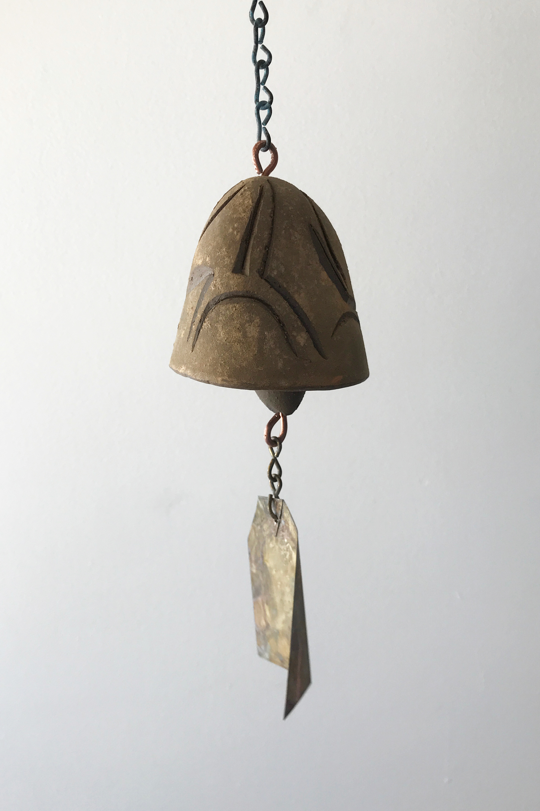
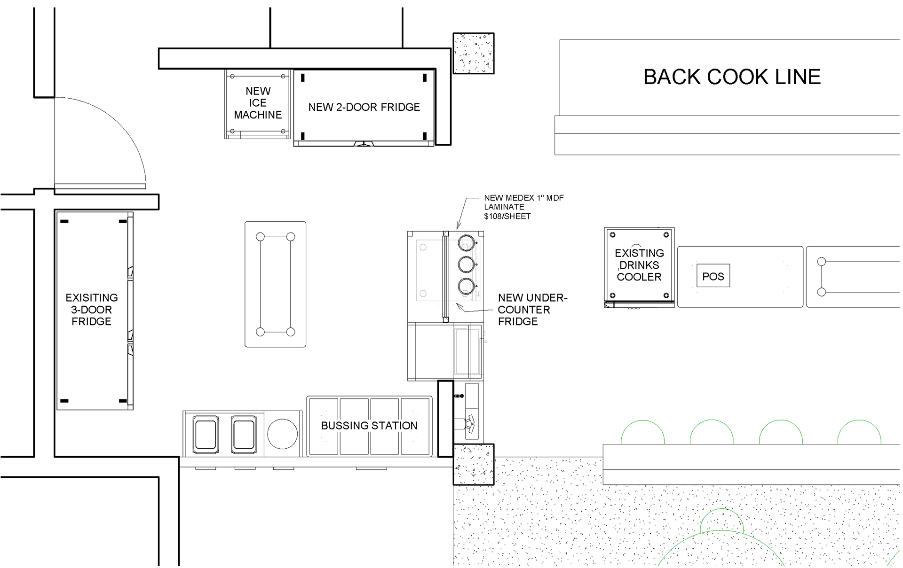
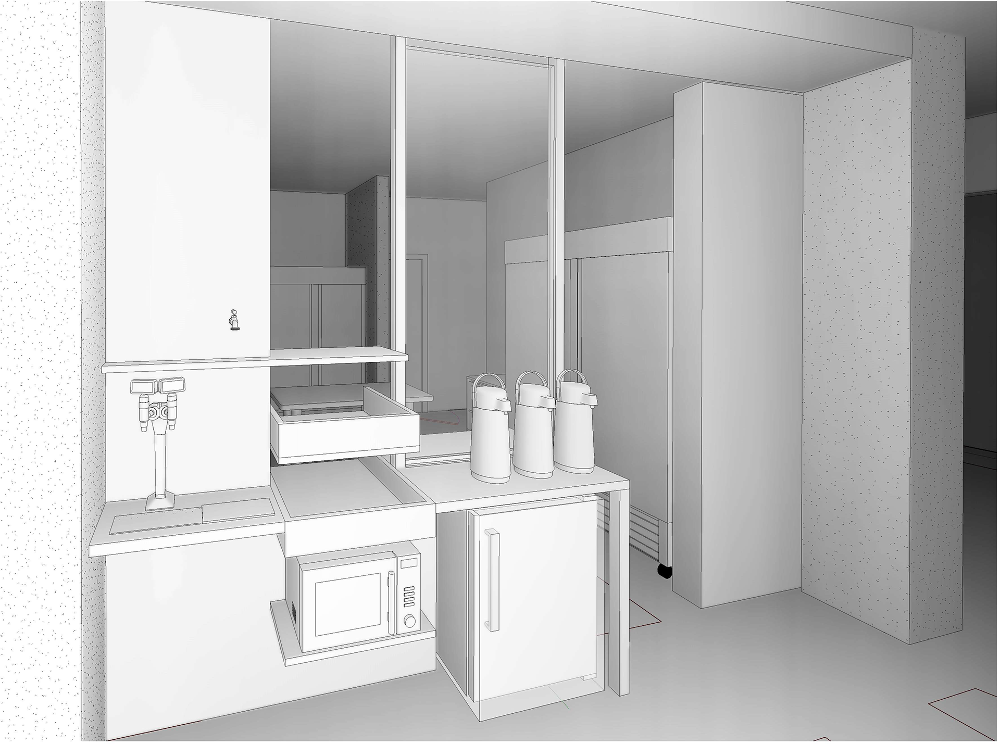
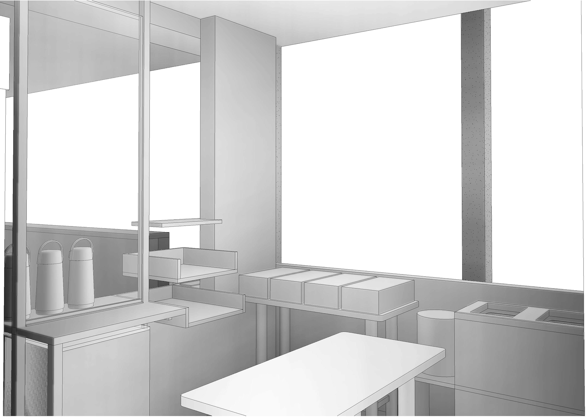
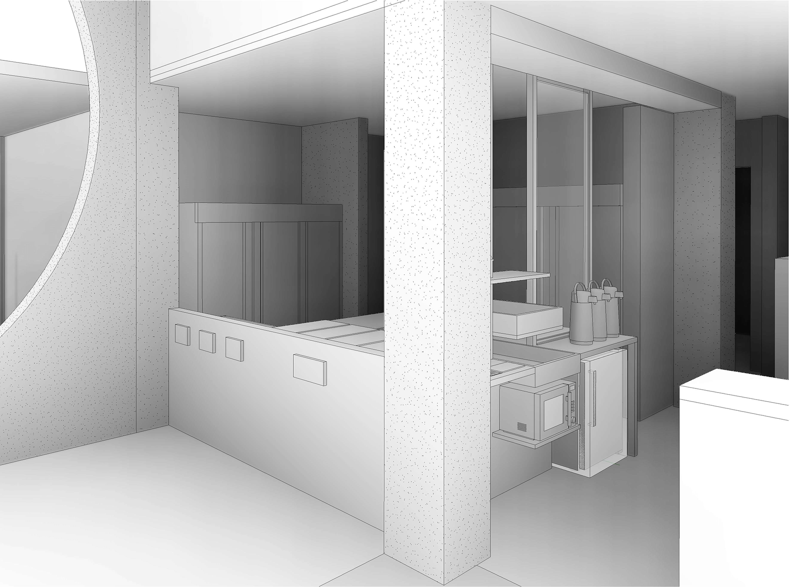

six weeks in the Sonoran Desert
I spent my workshop time at Arcosanti learning about the history and theory of the arcology, then constructed my own internship position to learn from and contribute to the community. I chose to work in ceramics and planning to respectively refine my craft and drafting skills. I would also occasionally help in the odd task, maintaining a bio swale, preparing a mold for an earth cast, and various concrete projects.
My more targeted work in ceramics allowed me to learn the craft of earth casting and plaster casting bells, carving to the style of Paolo Soleri, powdering, and processing the fired bells in arrangements. My work in planning involved developing plans for a cafe renovation with new systems for drinking water, waste disposal, storage, and food preparation.
    